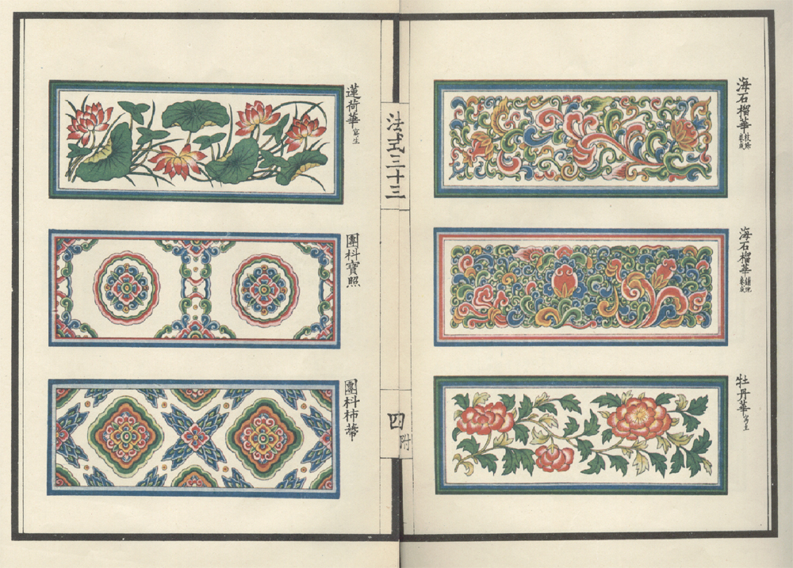
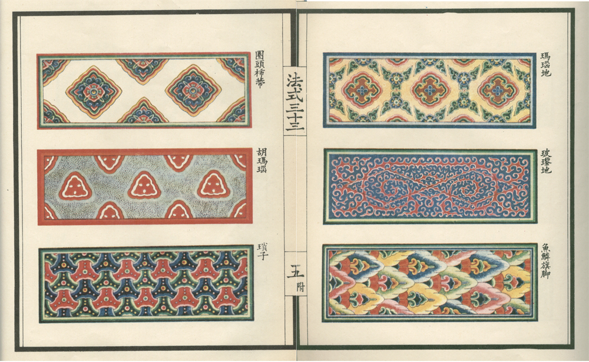
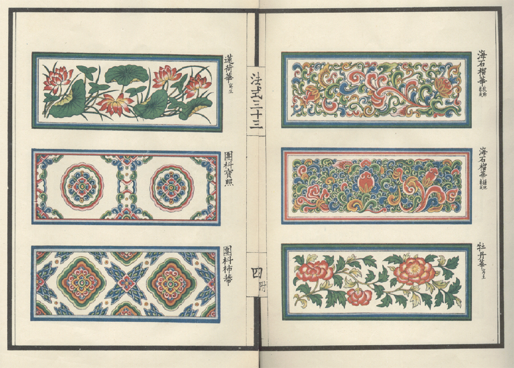
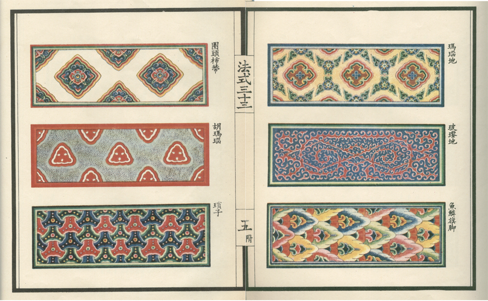

摘要
《營造法式彩畫研究》中紀錄了各式各樣的中國古式建築彩畫塗裝，不僅有藝術保存的價值，也有文化傳承的意義。其中的華文圖樣是由數個相同的封閉對稱幾何圖形重複排列所構成，此類重複貼圖的排列方法與特定幾何圖形的研究生成，也是電腦圖學中的重要研究領域。本論文提出了幾何遞迴圖形樣式生成系統，透過使用者設定不同的模型系統與參數調整，可以快速生成各式各樣的幾何圖形，再把生成的幾何圖形加以排列、組合、上色等等，就可以繪出具有個人風格的華文圖樣。除了圖形生成外，也可透過動畫播放的方式了解遞迴性相對運動模型系統的圖形生成過程。
 


